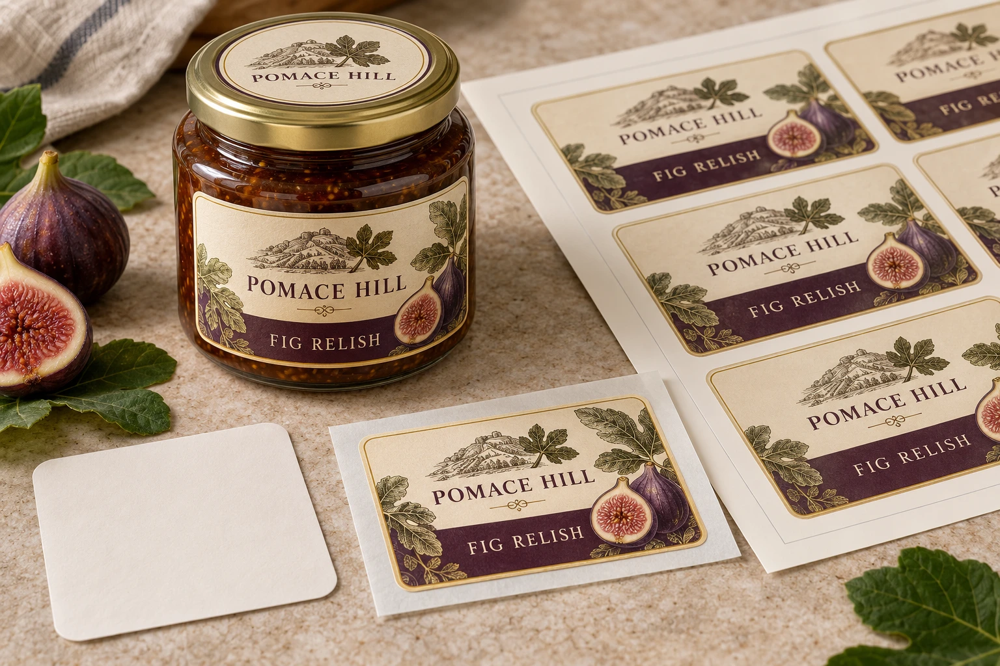
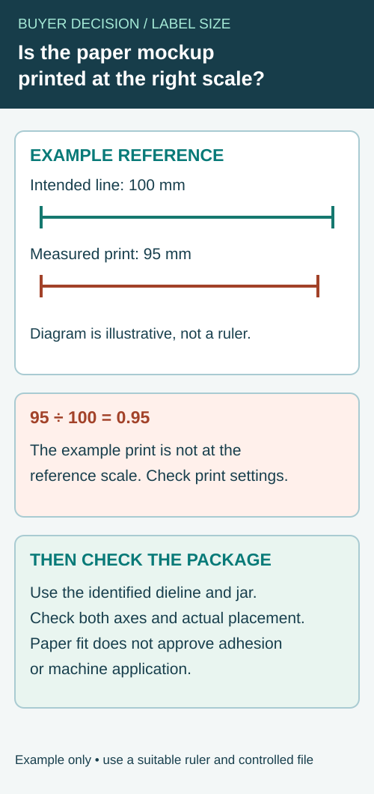

A buyer quotes the width shown in the artwork file, but that number may describe the artboard or bleed area rather than the label that will remain after cutting. The supplier and packer can then be discussing different physical sizes with the same number.
Specify the finished cut footprint, units and orientation independently of the surrounding artwork. Connect that definition to an identified dieline before the size becomes a purchase specification.

AI-generated packaging planning example. Pomace Hill is a fictional brand; not a customer project, production test or usable retail artwork.
Name the boundary being measured
The artboard is a document boundary. Bleed extends artwork beyond an intended cut. The dieline communicates a proposed physical cut path. The finished cut size should identify the label footprint being ordered, rather than whichever rectangle the design program displays first.
Ask the designer or converter to point out those boundaries on the supplied file. Do not infer the cut from a printed border: the border may be decorative and intentionally offset from the edge. For an irregular shape, a width and height alone cannot describe every curve or notch.
| Geometry cross-reference | What the purchasing record needs |
|---|---|
| Finished cut footprint | Width/height definition, units and identified shape |
| Orientation | Which axis is width, intended top and how the label sits on the package |
| Dieline | Exact reference and revision representing the proposed cut |
| Bleed/artboard | Separately identified document boundaries, excluded from cut size |
| Package placement | Actual usable area and relation to seams, shoulders or other features |
| Confirmation | Who checked the interpretation and which items remain provisional |
For a circular label, identify the finished diameter instead of supplying two unexplained dimensions. For a shaped label, ask how the overall extent is defined and include the actual path. Corner shape and any functional cut feature belong in the agreed geometry, not in an assumption based on a thumbnail.
Keep units and axes visible in every handoff
Write the units beside the values in the quote brief and dieline reference. Do not rely on an email thread to explain whether a bare number means inches or millimeters. If a conversion is required, agree the controlling value and how the converted display is rounded.
Likewise, identify which way a rectangular label is intended to sit. Rotating a design on an artboard can make a width/height pair ambiguous when it reaches the applicator team. Roll unwind and feed presentation need their own specification after the finished footprint is understood.
Compare the defined footprint with the actual package
Use a correctly scaled paper mockup cut to the proposed boundary to explore coverage and placement. Confirm the printing/export scale before treating the mockup as physical size. A fit check made from a page reduced to fit a printer cannot validate the dimensions in the purchasing record.
Place the mockup on the actual container or an explicitly identified representative sample. Record any difference between that sample and the intended production package. A plain paper footprint can expose a collision with a shoulder or seam; it cannot establish adhesive performance or machine application.
Close a mismatch before changing the number
If the artwork size and requested cut size differ, identify whether the issue is document setup, scaling, a different dieline or a changed package. Ask the responsible designer to issue the agreed revision rather than silently resizing the entire file. Scaling can also change text, codes and decorative relationships.
Keep the old and new geometry references attached to the change decision. Confirm whether tooling or other production preparation is affected with the supplier; do not assume a size edit is free or operationally neutral.
Continue with cut-path details, roll presentation and copy capacity once the physical footprint is defined.
Check a paper mockup's scale before using it to judge fit
A paper outline can help the buyer see whether a proposed cut collides with a jar shoulder, seam or corner. It answers that geometry question only if the printed outline represents the intended physical size. A PDF viewer's “fit to page” option can reduce or enlarge the output without changing the dimensions written in the label brief.


Make a scale-check reference part of the nonproduction mockup file. A designer can place a clearly labeled reference line outside the proposed label outline, with its intended length and units. Print the file using the agreed actual-size setting, then measure that line with an appropriate ruler. The reference is an indicator of the output scale, not a cutting allowance or a proposed label size.
| Check | Record | Decision if it does not agree |
|---|---|---|
| Controlled file | Mockup and dieline revision, intended units and exact footprint | Obtain the correct revision before measuring |
| Print setting | Viewer, printer, paper and actual-size setting used | Check whether automatic page fitting changed the output |
| Reference line | Intended length, measured length and ruler resolution | Treat a material discrepancy as an unresolved scale question |
| Horizontal and vertical axes | How each measurement relates to the artwork | Investigate inconsistent scaling or orientation |
| Physical package | Actual jar or bottle reference and marked placement | Identify any package variant not represented |
| Final cut | Proposed cut boundary, not the artboard or bleed boundary | Obtain the designer's confirmation if the lines differ |
For an illustrative check, the designer might add a line marked 100 mm outside the label. If a printout measures 95 mm, that output is not a 100% representation of that reference: 95 divided by 100 is 0.95. The numbers demonstrate arithmetic, not a measured printer error or acceptable tolerance. Measure with a suitable ruler and ask the designer or printer how much discrepancy matters for the actual fit decision. A short reference and coarse ruler may be inadequate to resolve a small difference.
Separate an output problem from a package problem
If the reference does not agree, do not immediately shrink or enlarge the approved artwork to make one paper print fit. First check the controlled PDF, document units and print options. Produce another identified mockup only after the cause of the scale difference is understood. If the reference agrees but the outline still crosses the jar corner, the remaining question concerns the proposed footprint or the actual container, not necessarily the printer.
Check both axes if the shape or printing path makes unequal scaling possible. Record any uncertainty instead of treating a screen thumbnail as proof of physical size. The square-jar guide explains why one jar may not represent every source; the content-capacity guide helps review whether approved copy still fits after a proposed cut change.
Know what the paper check cannot approve
A correctly scaled outline can reveal a geometric collision. It cannot demonstrate adhesion, printed color, barcode verification, label stiffness or machine placement. If a change to the footprint affects text or codes, obtain the relevant content and production review before ordering. Ask the supplier whether the new drawing changes tooling or other quoted work; do not assume a correction is free.
For a size discussion, send the actual package reference, dieline revision, controlling dimensions and units, marked mockup and any scale-check discrepancy. Identify which package variants still need physical comparison. The result is a better handoff, not a guarantee that a particular label construction will perform on the line.
Short answer
Choose a custom label size by measuring the usable flat or gently curved area of the package, then matching that space to the information buyers need to read. Avoid forcing artwork onto sharp curves, seams, ridges, caps or squeeze zones.
Label size planning by package type
| Package | Common label choice | Size issue to watch |
|---|---|---|
| Glass bottle | Front label, back label or wraparound label. | Shoulder curve and condensation can affect edge lift. |
| Food jar | Front label, lid label, seal strip or matched set. | Jar taper and lid radius can make large labels wrinkle. |
| Plastic cup | Clear film label, front label or cup transfer label. | Cup taper changes how a rectangle sits on the surface. |
| Can | Full wrap, partial wrap or front label. | Measure straight wall height and avoid rim areas. |
| Stand-up pouch | Front panel label or front/back set. | Leave space away from gussets, zipper lines and heat seals. |
How to measure a bottle or jar label
- Measure the height of the straight label panel, not the full bottle height.
- Wrap a strip of paper around the container to estimate label width.
- Specify whether the proposed wraparound design uses a gap or overlap, then confirm the intended geometry on the actual container.
- Check whether the label crosses a curve, seam, texture, rib or molded logo.
- Apply a paper mockup first if the label shape is large, tall or custom die-cut.
Front label, back label or wraparound?
A front label is easier for branding and display. A back label is useful for ingredients, barcode, nutrition area, storage text or importer details. A wraparound label gives more visual coverage, but it needs better measurement and application control.
Do not choose size before copy
Small labels can look premium, but they may not leave enough room for readable ingredients, flavor name, net quantity, barcode or multilingual text. Before printing, list the required copy and check whether the font can remain readable after the label is scaled to the package.
What to send for a label size review
| Field | Requirement to confirm |
|---|---|
| Package photo | Front, side and top view with a ruler when possible. |
| Target size | Width, height, shape and whether it is front/back or wraparound. |
| Application | Hand applied, dispenser, semi-auto labeler or full production line. |
| Material | Paper, clear BOPP, white BOPP, PET or premium finish options. |
Related guides
After size is confirmed, compare front/back labels vs wraparound labels, review artwork guidelines, and agree the applicable proof scope with the supplier before production.
Send the relevant project details
Discuss the finished label footprint with package photos/reference, controlling units, proposed cut dimensions, shape/dieline and application method. Mark artwork or fit assumptions that remain provisional. The form opens an email draft; use listed email or WhatsApp for files. Tooling, tolerances, fit and service scope need confirmation.